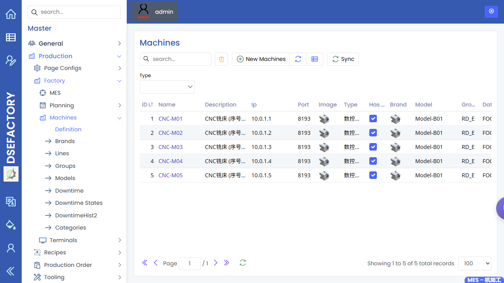
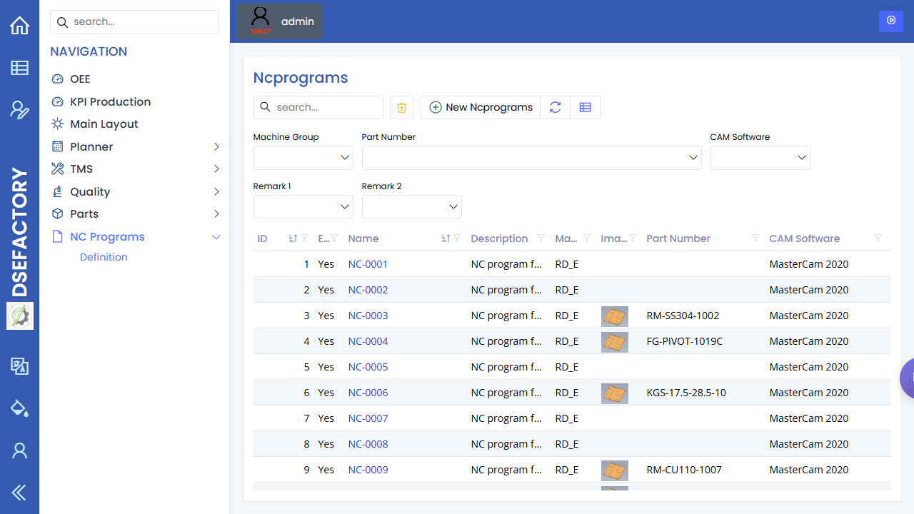

Production Engineer Manual
English | zh-CN
You are the production engineer. You keep the manufacturing definition usable: parts, BOM, recipes, process steps, machine capability, NC programs, cycle-time assumptions, and the handoff rules between planning, production, and quality.
Your Operating Flow
New part or revision
|
v
Check part + BOM --> Build recipe/processes --> Confirm machines
| | |
v v v
Prepare NC program Validate cycle time Hand off to planner
| |
v v
Support first run --> Review issues --> update recipe/setup dataScreens You Use Most
| Screen | What you do here |
|---|---|
| Parts | Confirm the production part, revision, drawing, material, and quality links are ready. |
| BOM Master and BOM Structure | Check parent/child material structure before planning generates work. |
| Recipes | Maintain the routing shell for a part or product family. |
| Recipe Processes | Define the ordered manufacturing process steps, expected cycle time, and process relationships. |
| Machines and Machine groups/lines | Confirm the target machines and groups exist and match the process capability. |
| NC Programs | Maintain CNC program references and make sure the correct revision is ready for production. |
| Production Orders | Inspect generated work orders and diagnose routing, quantity, or status issues. |
| Inspection Planning | Coordinate with QA so the correct inspection stage is attached to the process. |
First Article / New Revision Checklist
- Confirm the Part has the correct revision,
description, drawing reference, and active status.
- Check BOM Master for missing materials or
unexpected child parts.
- Create or update the Recipe.
- Add each Recipe Process in
the real shop-floor order.
- Assign capable Machines or machine groups.
- Confirm the NC Programs record and
revision are available before the planner releases work.
- Ask QA to confirm Inspection Planning
and SMARTQC setup.
- Support the first production run and update cycle-time or setup assumptions
if actual performance differs from the recipe.
During Production
| Situation | What to check |
|---|---|
| Planner cannot generate expected orders | Recipe process list, BOM link, and part revision setup |
| Work order reaches the wrong machine group | Recipe process machine assignment and machine group mapping |
| NC program mismatch on the floor | NC Programs record, part revision, and machine compatibility |
| Cycle time is unrealistic | Recipe process cycle-time fields and recent production records |
| Quality check appears at the wrong stage | Inspection Planning and check-sheet link to part/process |
Handoff Rules
- Hand off to the planner only after the part, BOM, recipe, machine
capability, and NC program are ready.
- Hand off to the quality engineer when inspection stages, CMM programs,
or SMARTQC check sheets need definition or revision.
- Hand off to the administrator if a required page is hidden by permissions
or master-data setup is blocked by access.
Screenshots
Recommended screenshots for this role:
| Capture | Suggested page |
|---|---|
| Part setup for production readiness | Parts |
| Recipe process route | Recipe Processes |
| Machine capability list | Machines |
| NC program list | NC Programs |
| BOM structure review | BOM |

The recipes screenshot shows the authenticated recipe maintenance page used to review production routings and process definitions.

The machines screenshot shows the master-data list used to confirm machine capability and grouping.

The NC programs screenshot shows the program catalog used to confirm CNC program readiness before release to production.

The parts screenshot shows the authenticated list used to confirm production part readiness before route and BOM review.

The BOM screenshot shows the authenticated structure page used to review parent and child material relationships.